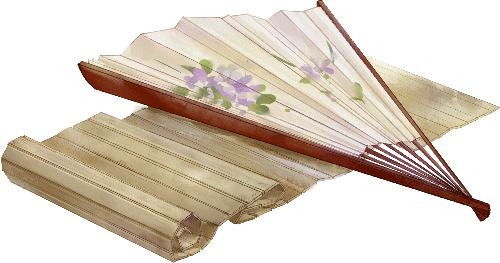
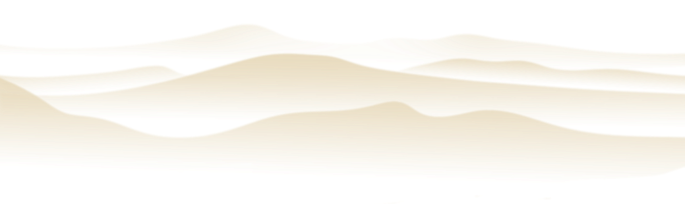
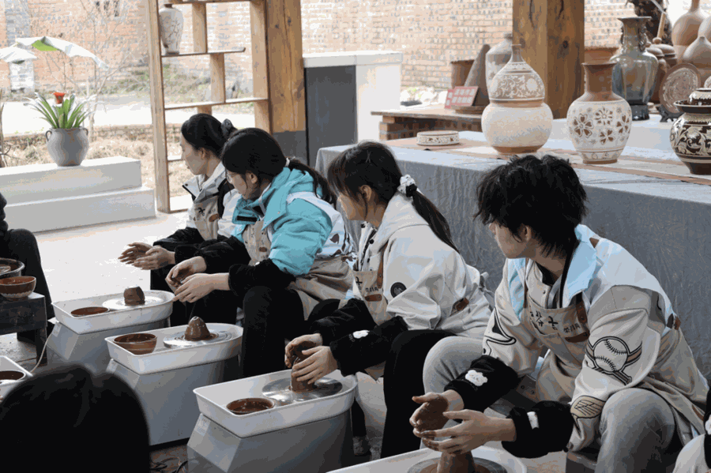
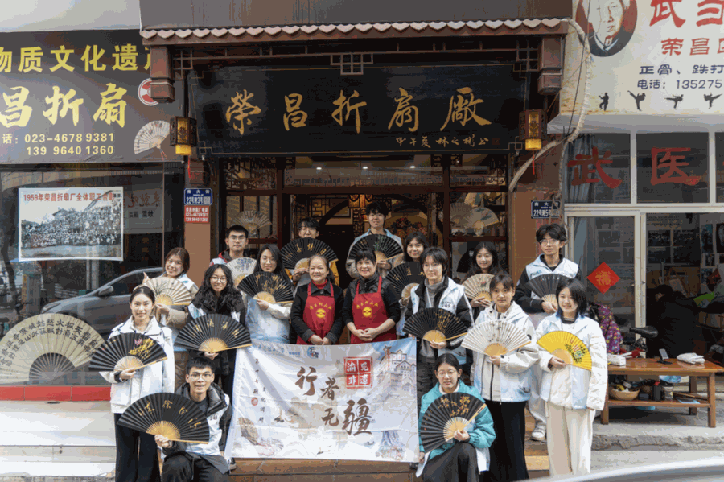

【行者无疆·渝见非遗】个人实践感悟——童思嘉
走进非遗博物馆，我原以为会遇见一段凝固的历史。可当那些夏布在玻璃后面依然保持着经纬分明的倔强，当陶罐的裂痕里仿佛还住着宋时的烟火，我才忽然明白它们不是在展示“过去”，而是在证明有些东西从未离开。博物馆不是终点，是这些手艺活过的证据。


在三峡博物馆里，站在那些从江底抢救出来的石刻面前，我听见了另一种声音。原来重庆的非遗从来不是精致的盆景，它是从大江的号子里、从纤夫的脊背上、从码头的喧嚣里长出来的。火锅的麻辣，是先民与潮湿气候的谈判，而夏布的清凉，则是劳动与智慧的结晶。
带着这些重量，我们走进荣昌。在荣昌折扇厂，我们见到了尹阿姨，她为我们讲述家族世代制扇的故事，为我们现场示范荣昌折扇的制作。指尖捻过削得薄韧的竹篾，折、编、扎、糊，每一个动作都娴熟利落，掌心的老茧摩挲着竹材，是时光与技艺相融的独特印记。
她一边忙活，一边细细讲解着折扇的门道，话语里满是对这门手艺的珍视与热忱，指尖流转的不仅是精巧的技艺，更有质朴动人的人情暖意。与尹阿姨的交谈中，我感受到了博物馆里那些竹编器物最初的温度。原来博物馆与作坊之间，只隔着一双还在劳作的手。
泥土记得所有故事。在陶坊，当旋转的轱辘带着我的手指舞蹈，我忽然懂了博物馆里那些残缺陶器曾经有过的圆满。原以为不过是指尖轻拢，泥团便会顺着心意成型，可真正上手才知，这旋转的方寸之间，藏着万般难。

行者无疆
力道稍重，泥胎便歪扭塌陷；转速微快，坯身就开裂变形，水多了软塌难立，水少了干涩难塑。反复揉泥、扶正、塑形，指尖被泥垢裹住，手臂酸麻不已，不过是想捏出一个规整的杯身，便要重来数次。才恍然明白，那些温润浑圆的器物，从不是随手而就的偶然，而是匠人在无数次的试错、打磨与坚守中，揉进了时光与心力的成果。
快门声落，光影定格。我的镜头留住了巴渝的手泽，而这段旅程，留住了我们。江水带着古老的故事继续向前，博物馆的灯按时熄灭。但那些在时光里发亮的东西，正等着被重新看见，用新的眼睛，用温柔的数字，用永不熄灭的好奇心。

江水长流，手泽常新。我的镜头有幸成为一道桥，连接着古老的技艺与年轻的眼睛，也连接着我们这群因非遗而相遇的灵魂。这份用光影编织的友谊，与那些非遗记忆一样，将成为我生命中永不褪色的底片。
来源 | 行者无疆实践团
图片 | 行者无疆实践团
文字 | 童思嘉
编辑 | 童思嘉
审核 | 刘辰锡
责编 | 邹靓靓 周 亮